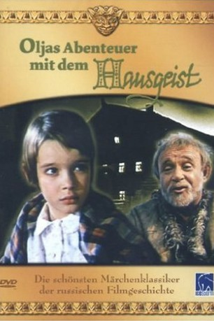

#11857 Oljas Abenteuer mit dem Hausgeist
Alternativ: Derevnya Utka. Skazka. (Englischer Titel)
 
 IMDB-Wertung: 7.4 / 10
IMDB-Wertung: 7.4 / 10  Metascore: 0
Metascore: 0 
Es war einmal die kleine Olja, die die großen Ferien auf dem Land, im schönen großen Haus ihrer Großmutter verbrachte. Dort begegnete sie, beim spielen auf dem Dachboden, dem Hausgeist, einem lustigen, kleinen Männlein, genannt "Schischock". Die beiden schließen Freundschaft. Schischock sprudelt nur so vor verrückten Einfällen und Olja verbringt mit ihm die schönsten Ferien, die sie je hatte. Als die Schule wieder begann, begleitet der Hausgeist Olja zurück in die Stadt. Hier kann sich Schischock so richtig austoben und in kürzester Zeit sorgt er für ein riesiges Durcheinander in der Wohnung von Olja's Eltern...
Jahr: 1977
Dauer: 83 Minuten
FSK:
Land: Soviet-Union Studio: Kinostudiya imeni M. GorkogoTonspuren:
Untertitel:
Auflösung: SD (512x384) Größe: 698 MB
Genre: Familie
Regisseur: Boris Buneev
Drehbuch: Aleksandr Aleksandrov
Soundtrack: Yevgeniy Gevorgyan
Darsteller:
- Rolan Bykov als Shishok
- Oksana Duben als Olya
- Evdokiya Alekseeva als Babushka
- Elena Sanaeva als Taisyia - maty Oli
- Aleksandr Potapov als dyadya Albert
- Vadim Zakharchenko als Prokhor
- Georgiy Millyar als mister Brauni
- Vadim Aleksandrov als Professor
- Sergey Remizov als Yevgeniy - papa Oli
Datei: X:\Märchen\Oljas Abenteuer mit dem Hausgeist (1977, FSK, 512x384).avi seit 02.10.2019
Festplatte: Kinder-Filme+Trick
 Es gibt insgesamt 61 Filme in der Gruppe 'Märchen'
Es gibt insgesamt 61 Filme in der Gruppe 'Märchen'